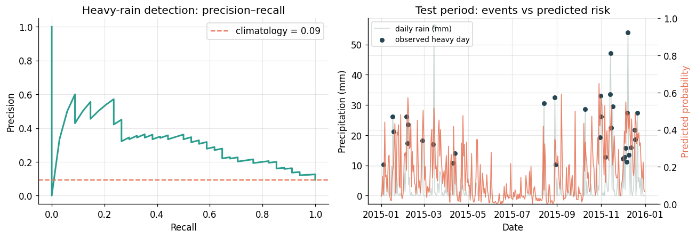
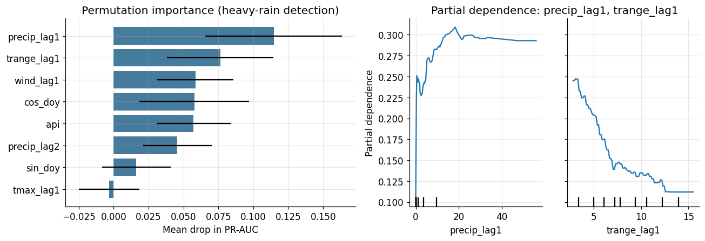

Hydrologist · Tracking water through landscapes of time.
Postdoctoral Researcher · Department of Geography, National Taiwan Normal University
I study how water moves through landscapes — not just where, but when. My research uses stable isotopes, heat tracers, recession analysis and, more recently, machine learning to follow the journey of water from rainfall through soils, rock and channels to streams and coastal wetlands. The unifying framework is hydro-tempo-dynamics: water's response time shapes how a catchment delivers floods, while its transit time shapes how it delivers solutes, sediments and ecological signals.
My empirical home base is subtropical mountainous Taiwan, with field sites in the Fushan Experimental Forest, the Feitsui reservoir catchment, and the Danshui River basin. I am increasingly interested in extending these methods to human-engineered water systems and to AI-assisted hydrological prediction.
Recession analysis, new vs. old water separation, StorAge Selection (SAS) framework.
δ¹⁸O, δD, d-excess, ¹⁷O-excess and stream-temperature tracing in mountain catchments.
Random Forest, LSTM and explainable AI for water-age inference and early warning.
Human-engineered irrigation systems and participatory water monitoring.

An end-to-end, reproducible workflow on real daily climate observations (NOAA GHCN). Temporally honest validation; occurrence and >10 mm event detection reach ROC AUC 0.80–0.81, while exact daily totals remain unpredictable (NSE 0.08) — the hydrologically meaningful asymmetry.

Permutation importance and partial-dependence analysis show antecedent rainfall and the prior-day temperature range as the dominant, physically interpretable controls on heavy-rain probability — AI used as a thinking tool, not an oracle.
19 peer-reviewed SCI publications in total. Full list on Google Scholar.
I develop open teaching materials that bring AI and computational methods into geography courses, with a focus on physical geography, GIS, remote sensing, and hydrology. My guiding principle is that AI should be a thinking tool students learn to evaluate critically — not an oracle to defer to.
Reproducible teaching notebooks are openly hosted and updated over time at github.com/junyilee7/geography-ai-teaching.
Short, dated entries on methods I am reading or building — updated roughly monthly.